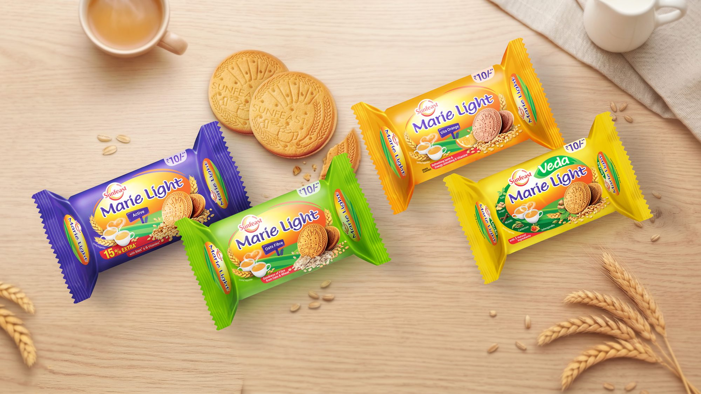
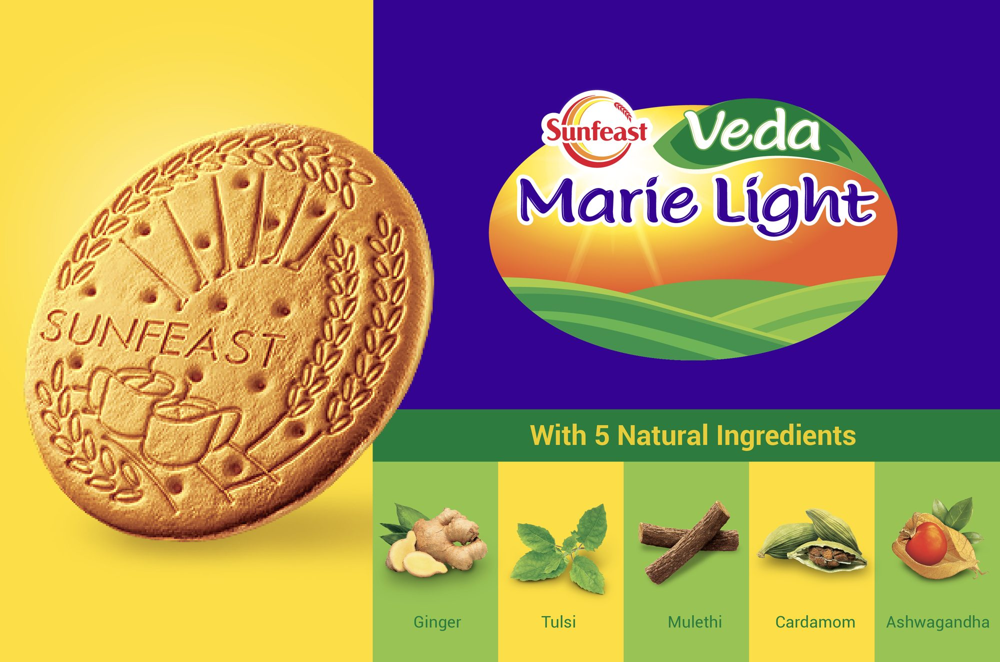
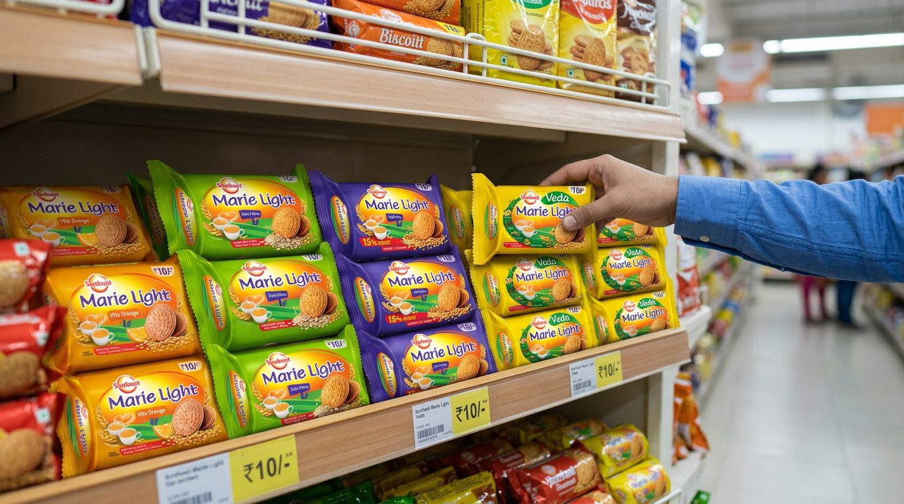

A fresh pack for one of India's biggest biscuit brands.
Elephant Design, Pune
Modernise Sunfeast Marie Light, from the house of ITC and one of India's biggest household biscuit brands. The job was to refresh the whole Marie Light range (Active, Oats Fibre, Vita Orange and Veda) so it stays relevant to health-conscious families while shoppers still recognise it instantly in the aisle.
Changing the visual anchors on a huge legacy biscuit risks confusing millions of daily shoppers in crowded general trade stores. The pack also had to communicate wellness and set apart functional sub-brands like Sunfeast Veda Marie Light, which has 5 natural Ayurvedic ingredients (Ginger, Tulsi, Mulethi, Cardamom, Ashwagandha), without feeling clinical or pharmaceutical.



The hard part wasn't designing something new. It was changing a biscuit pack millions of people buy on autopilot without anyone noticing.